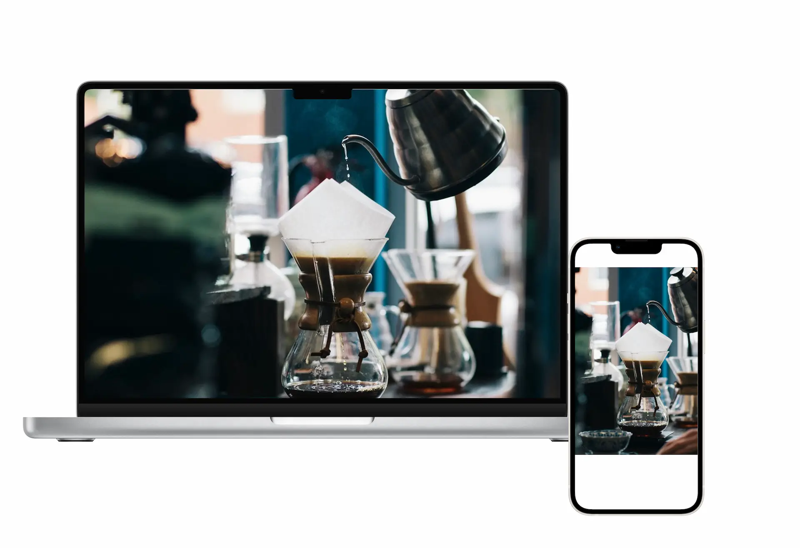
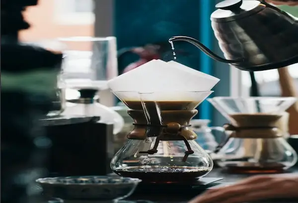
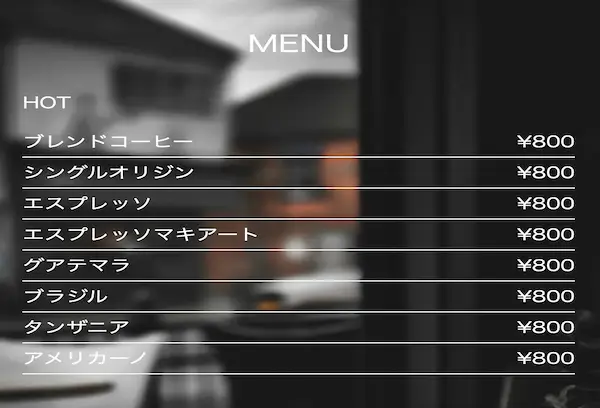

01 目的・課題
既存のサイトは情報が整理されておらず、店舗の魅力やメニューの特徴が伝わりにくい状態でした。 またスマートフォンでの閲覧時に視認性低く、 来店導線がという弱いという課題がありました。 そのため、ブランドイメージの向上と来店促進を目的にリニューアルを行いました。
Before
- 情報が散在していた
- スマホ表示が見づらい
- カフェの雰囲気が伝わりにくい
After
- 情報設計を見直し整理
- レスポンシブ対応で視認性向上
- 写真を活用し世界観を訴求
地域密着型のカフェのサイトを制作しました。 店舗の雰囲気やこだわりのコーヒーの魅力が伝わるよう、 視覚的な印象と導線設計を重視しました。

2025年3月10日〜2025年13月30日(20日)
HTML / CSS / javascript
デザイン / コーディング
既存のサイトは情報が整理されておらず、店舗の魅力やメニューの特徴が伝わりにくい状態でした。 またスマートフォンでの閲覧時に視認性低く、 来店導線がという弱いという課題がありました。 そのため、ブランドイメージの向上と来店促進を目的にリニューアルを行いました。
20代〜40代のカフェ利用者 落ち着いた雰囲気を求める社会人・学生 SNSでカフェを探すユーザー



カフェの「落ち着き」と「温かみ」を表現するために、 ベージュやブラウンを基調としたカラー設計にしました。 ファーストビューでは印象的な写真を配置し、 訪問ユーザーに世界観を直感的に伝える構成にしています。 また「メニュー → 店舗情報 → お問い合わせ」へと 自然に誘導する導線設計を意識しました。
情報設計を見直し、導線を最適化したことで ユーザーの回避率とお問い合わせ数の向上につながりました。
68% → 42%
(-26%)
32分 → 46分
(+14分)
月5件 → 月18件
(約3.6倍)
70% → 82%
(+12%)
※データはリニューアル前後の3ヶ月平均比較(想定)